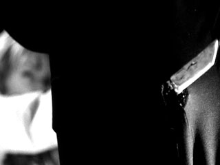

Parmi les nombreuses étrangetés du film, Gogo Yubari décroche la palme. Officiellement 17 ans, elle sirote tranquillement de l’alcool dans un bar, comme si la police n’existait que dans les films… mais pas celui-ci. Si l’on replace les scènes dans l’ordre réel, elle devrait même être encore plus jeune, ce qui transforme la séquence en véritable concours de suspension d’incrédulité. Tarantino semble dire : « La logique ? Connais pas. Mais regarde comme c’est cool. » Résultat : un plothole si gros qu’on pourrait y ranger le katana de la Mariée. Une belle démonstration que la narration non linéaire, c’est fun… tant qu’on ne la regarde pas de trop près.
Quand Hattori Hanzo écrit le nom de Bill sur la vitre,

Malgré la détermination qui décuple la force de la mariée, celle-ci lui permettant de soulever un homme pesant au moins 70 kg du bout de son sabre. Même si celui-ci est super tranchant, l'homme aurait dû glisser. C'est la loi de l'attraction terrestre. Beatrix n'as aucun respect même pour Isaac Newton
